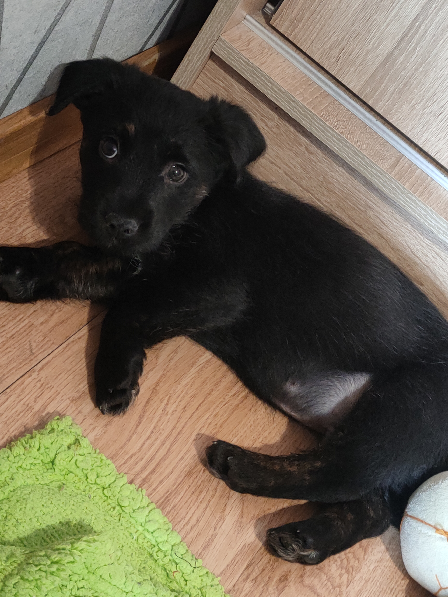

🐾🐾Szczeniaki rodzą się raczej bezradne, lecz szybko osiągają samodzielność i rozwijają własny, zupełnie niepowtarzalny charakter. To oszałamiająca podróż, podczas której pies przechodzi przez wiele etapów. Świadomość poszczególnych etapów rozwoju psa ułatwi Ci zrozumienie jego zachowania i jego szkolenie.🐾🐾
Przykład 2 miesięcznego szczeniaka ( Okres socjalizacji )
Szczeniak 9 miesięcy ( Okres nastoletni )